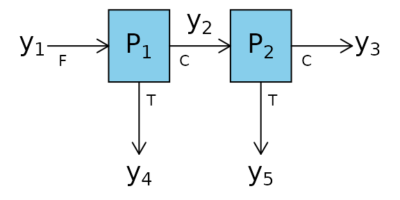
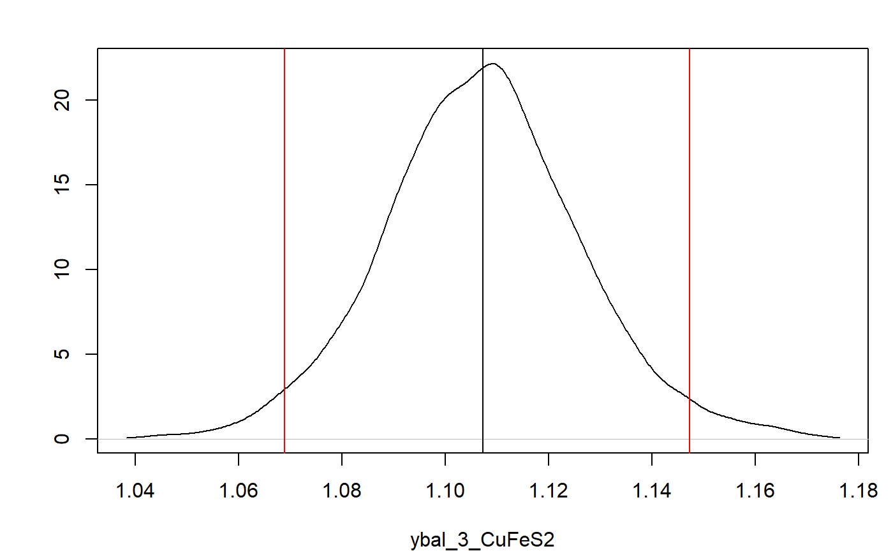
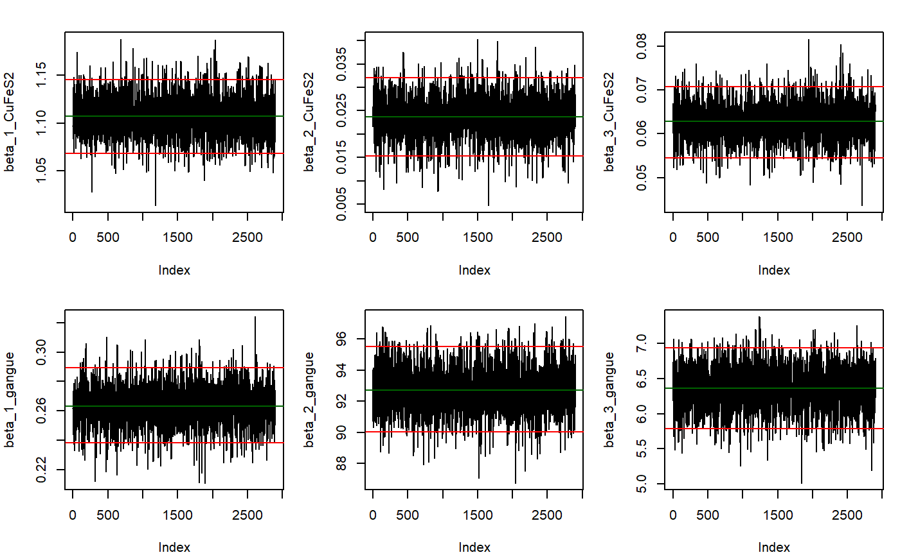
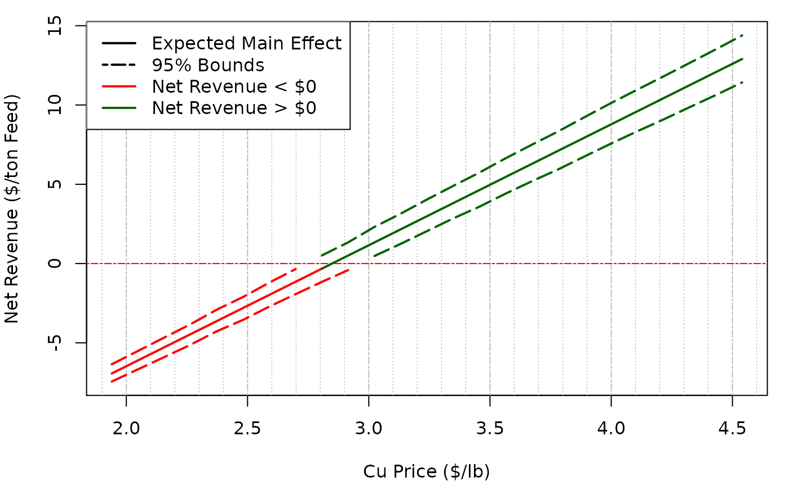

Two_Node_Process
Scott Koermer
2022-06-16
Source:vignettes/Two_Node_Process.Rmd
Two_Node_Process.RmdThe function BMB is used with a two node process and
simulated data.

The constraints around these process nodes are:
\[\begin{align} y_1 &= y_2 +y_4\\ y_2 &= y_3 +y_5 \end{align}\]
Therefore the matrix of constraints, C is:
C <- matrix(c(1,-1,0,-1,0,0,1,-1,0,-1), nrow = 2, ncol = 5, byrow = TRUE)
C
#> [,1] [,2] [,3] [,4] [,5]
#> [1,] 1 -1 0 -1 0
#> [2,] 0 1 -1 0 -1The constrainProcess function in the
BayesMassBal package is used to generate an X
matrix based on C that will later be used with the
BMB function.
X <- constrainProcess(C = C)
X
#> [,1] [,2] [,3]
#> [1,] 1 1 1
#> [2,] 1 0 1
#> [3,] 1 0 0
#> [4,] 0 1 0
#> [5,] 0 0 1Constraints can also be imported from a .csv file. The
path to a file, included in the BayesMassBal package, for
this process can be found and constraints can be imported by specifying
the location for the file argument for
constrainProcess as shown below:
constraint_file_location <- system.file("extdata", "twonode_constraints.csv",package = "BayesMassBal")
X <- constrainProcess(file = constraint_file_location)The previously simulated data is loaded from a .csv file
using the importObservations() function. The local location
of the the file imported below can be found by typing
system.file("extdata", "twonode_example.csv",package = "BayesMassBal").
View the document in Excel to see how your data should be formatted for
import. Note: it is not required that the
entries into the *.csv file are separated by
";".
y <- importObservations(file = system.file("extdata", "twonode_example.csv",
package = "BayesMassBal"),
header = TRUE, csv.params = list(sep = ";"))Then, the BMB function is used to generate the
distribution of constrained masses from the data with
cov.structure = "indep".
indep.samples <- BMB(X = X, y = y, cov.structure = "indep", BTE = c(100,3000,1), lml = TRUE, verb = 0)The output of BMB is a BayesMassBal object.
Special instructions are designated when feeding a
BayesMassBal object to the plot() function.
Adding the argument layout = "dens" and indicating the mass
balanced flow rate for CuFeS2 at \(y_3\) should be plotted using a list
supplied to sample.params, the desired distribution can be
plotted with its 95% Highest Posterior
Density Interval.
plot(indep.samples,sample.params = list(ybal = list(CuFeS2 = 3)),
layout = "dens",hdi.params = c(1,0.95))
It is also possible to generate trace plots to inspect convergence of the Gibbs sampler. Here are trace plots for \(\beta\)
plot(indep.samples,sample.params = list(beta = list(CuFeS2 = 1:3, gangue = 1:3)),layout = "trace",hdi.params = c(1,0.95))
A quantitative diagnostics for convergence and autocorrelation are
available as part of the output from BMB:
indep.samples$diagnostics
#> $beta
#> $beta$CuFeS2
#> index cd ess
#> 1 1 -0.3481962 2904.267
#> 2 2 -1.5462121 3547.306
#> 3 3 -0.1128256 2709.364
#>
#> $beta$gangue
#> index cd ess
#> 1 1 0.4046731 2900.000
#> 2 2 0.6759846 2900.000
#> 3 3 0.8088580 1921.394
#>
#>
#> $Sig
#> $Sig[[1]]
#> index cd ess
#> 1 1 1.0437838 2900.000
#> 2 2 0.2161856 2900.000
#> 3 3 1.1154242 2371.283
#> 4 4 1.2055592 1877.015
#> 5 5 -0.8871600 1946.171
#>
#> $Sig[[2]]
#> index cd ess
#> 1 1 0.93455684 2900.000
#> 2 2 0.27374924 2617.746
#> 3 3 0.05169469 2329.480
#> 4 4 1.34512676 2500.236
#> 5 5 -0.62910263 2096.063The model with independent variances may not be the best fitting model. Models specifying covariance between sample locations for a single component, and covariance between components at a single location are fit.
component.samples <- BMB(X = X, y = y, cov.structure = "component", BTE = c(100,3000,1), lml = TRUE, verb = 0)
location.samples <- BMB(X = X, y = y, cov.structure = "location", BTE = c(100,3000,1), lml = TRUE, verb = 0)Computing \(\log(\mathrm{Bayes Factor})\) for \(BF = p(y|\texttt{indep})/p(y|\texttt{component})\):
indep.samples$lml - component.samples$lml
#> [1] -126.8257Then comparing \(p(y|\texttt{component})\) to \(p(y|\texttt{location})\)
component.samples$lml - location.samples$lml
#> [1] 0.7741722Shows there is little difference between the models where
cov.structure = "location" and
cov.structure = "component", but both of these models
better explain the data than cov.structure = "indep".
We can view a summary of the favored model by passing a
BayesMassBal object to the summary function.
While not done in this case, the summary table can be saved by passing
the desired name of a *.csv file to the export
argument.
summary(component.samples, export = NA)
#> Mass Flow Rates:
#>
#> CuFeS2:
#> --------------------
#> Sampling Location Expected Value 95% LB 95% UB
#> 1 1.19874562 1.15064761 1.24762759
#> 2 1.17341275 1.12789819 1.22444013
#> 3 1.11059815 1.06172952 1.16412104
#> 4 0.02533287 0.01639162 0.03327121
#> 5 0.06281460 0.05157122 0.07295361
#>
#> gangue:
#> --------------------
#> Sampling Location Expected Value 95% LB 95% UB
#> 1 100.3335984 95.2866899 105.1579011
#> 2 6.6710739 5.9163687 7.5536923
#> 3 0.2604721 0.2282041 0.2981257
#> 4 93.6625244 88.7788574 98.1532800
#> 5 6.4106019 5.6573294 7.2815562
#>
#> Total:
#> --------------------
#> Sampling Location Expected Value 95% LB 95% UB
#> 1 101.532344 96.498437 106.366104
#> 2 7.844487 7.092959 8.730092
#> 3 1.371070 1.309323 1.429205
#> 4 93.687857 88.803744 98.173491
#> 5 6.473416 5.729112 7.359355
#>
#>
#> log-marginal likelihood:
#> -66.0640470930616The main effect of a variable independent of the process can be
calculated by supplying a function, fn that takes the
arguments of mass balanced flow rates ybal, and the random
independent and uniformly distributed variables x.
Information can be gained on the main effect of a particular element of
x, xj, on fn using the
mainEff function. Output from mainEff includes
information on the distribution of \(E_x\lbrack f(x,y_{\mathrm{bal}})|x_j
\rbrack\).
fn_example <- function(X,ybal){
cu.frac <- 63.546/183.5
feed.mass <- ybal$CuFeS2[1] + ybal$gangue[1]
# Concentrate mass per ton feed
con.mass <- (ybal$CuFeS2[3] + ybal$gangue[3])/feed.mass
# Copper mass per ton feed
cu.mass <- (ybal$CuFeS2[3]*cu.frac)/feed.mass
gam <- c(-1,-1/feed.mass,cu.mass,-con.mass,-cu.mass,-con.mass)
f <- X %*% gam
return(f)
}
rangex <- matrix(c(4.00 ,6.25,1125,1875,3880,9080,20,60,96,208,20.0,62.5),
ncol = 6, nrow = 2)
mE_example <- mainEff(indep.samples, fn = "fn_example",rangex = rangex,xj = 3, N = 25, res = 25)A plot of the output can be made. To get lines that are better
connected, change increase N in the mainEff
function.
m.sens<- mE_example$fn.out[2,]
hpd.sens <- mE_example$fn.out[c(1,3),]
row.names(hpd.sens) <- c("upper", "lower")
g.plot <- mE_example$g/2000
y.lim <- range(hpd.sens)
lzero.bound <- apply(hpd.sens,1,function(X){which(X <= 0)})
lzero.mean <- which(m.sens <= 0)
main.grid <- pretty(g.plot)
minor.grid <- pretty(g.plot,25)
minor.grid <- minor.grid[-which(minor.grid %in% main.grid)]
y.main <- pretty(hpd.sens)
opar <- par(no.readonly =TRUE)
par(mar = c(4.2,4,1,1))
plot(g.plot,m.sens, type = "n", xlim = range(g.plot), ylim = y.lim, ylab = "Net Revenue ($/ton Feed)", xlab= "Cu Price ($/lb)")
abline(v = main.grid, lty = 6, col = "grey", lwd = 1)
abline(v = minor.grid, lty =3, col = "grey", lwd = 0.75)
abline(h = 0, col = "red", lwd = 1, lty = 6)
lines(g.plot[lzero.mean],m.sens[lzero.mean],col = "red", lwd =2)
lines(g.plot[-lzero.mean[-length(lzero.mean)]],m.sens[-lzero.mean[-length(lzero.mean)]],col = "darkgreen", lwd =2)
lines(g.plot[lzero.bound$lower],hpd.sens[2,][lzero.bound$lower], lty = 5, lwd = 2, col = "red")
lines(g.plot[-lzero.bound$lower],hpd.sens[2,][-lzero.bound$lower], lty = 5, lwd = 2, col = "darkgreen")
lines(g.plot[lzero.bound$upper],hpd.sens[1,][lzero.bound$upper], lty = 5, lwd = 2, col = "red")
lines(g.plot[-lzero.bound$upper],hpd.sens[1,][-lzero.bound$upper], lty = 5, lwd = 2, col= "darkgreen")
legend("topleft", legend = c("Expected Main Effect", "95% Bounds", "Net Revenue < $0", "Net Revenue > $0"), col = c("black","black","red", "darkgreen"), lty = c(1,6,1,1), lwd = c(2,2,2,2), bg = "white")
par(opar)